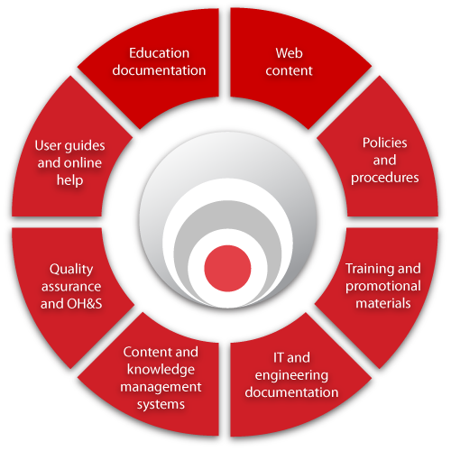

Documentation services
Knowledgedoc designs, writes, updates and maintains written materials to deliver high-quality content that leverages innovative technical solutions and ensures the knowledge capital of your company is not lost.
Read more about the documentation we produce in our case studies.
How we deliver excellent documentation
Knowledgedoc delivers excellent documentation by applying our proven documentation methodology to:
- understand and capture your requirements
- agree project and quality deliverables
- finalise content in collaboration with your subject matter experts
- publish the agreed content
- review the project outcome
- arrange maintenance services for the life of the documentation.
Read more about our documentation methodology.
Need more information?
Whatever your requirement, we offer sound consulting advice and writing wisdom gained from over 20 years in the field, to well-honed methodologies and project management capabilities to support the creation of our expert documentation. We are able to achieve excellent value for all our customers, no matter how big or small.
Contact us anytime for obligation-free advice about your writing needs.